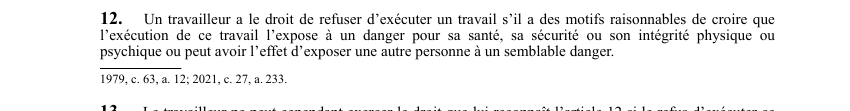

art-12-LSST : droit refus travail dangereux
Un article du wiki ⚖️ Recueil législatif
En bref
Un travailleur a le droit de refuser d'exécuter un travail s'il a des motifs raisonnables de croire que l'exécution l'expose à un danger pour sa santé. Ce droit vise le travailleur.
- Sa sécurité ou son intégrité physique ou psychique.
🌐 LegisQuébec · 📄 PDF officiel (page 9)
Texte officiel : capture du PDF
{kind=link}

Toucher l'image pour l'agrandir🔗 Ouvrir a cette page : LSST.pdf : page 9 · texte a jour au 26 mars 2024
Voir aussi
- art. 10 : droits formation services santé · droit : le travailleur a droit à des services de formation, d'information et de conseil en matière de santé et de sécurité, à la formation et supervision appropriées, aux services de santé préventifs et curatifs selon les risques auxquels il est exposé.
- art. 11 : droits étendus aux personnes assimilées · les personnes visées dans les paragraphes 1° et 2° de la définition du mot «travailleur» à l'article 1 jouissent des droits accordés au travailleur par les articles 9, 10 et 32 à 48.
- art. 13 : limites du droit de refus · faculté : le travailleur ne peut exercer le droit de refus si ce refus met en péril immédiat la vie, la santé, la sécurité ou l'intégrité physique ou psychique d'une autre personne, ou si les conditions d'exécution du travail sont normales dans le genre de travail qu'il exerce.
- art. 14 : maintien travailleur en refus · faculté : jusqu'à une décision exécutoire ordonnant la reprise du travail, l'employeur ne peut faire exécuter le travail par un autre travailleur ou par une personne hors de l'établissement ; le travailleur qui exerce son droit de refus est réputé être au travail.
- ↑ Loi : LSST
Pages qui pointent ici (24)
- 🎯 Démarrage rapide, conseiller SST Droit du travail
- 👷 Wiki Droit du travail mines - Travailleurs Droit du travail
- Arrêt de travail Recueil législatif
- art-10-LSST : droits formation services santé Recueil législatif
- art-11-LSST : droits étendus aux personnes assimilées Recueil législatif
- art-13-LSST : limites du droit de refus Recueil législatif
- art-14-LSST : maintien travailleur en refus Recueil législatif
- art-30-LSST : protection travailleur contre représailles Recueil législatif
- Délais clés en SST québécoise Recueil législatif
- Droit de refus Recueil législatif
- Droits du travailleur Droit du travail
- Droits et recours du travailleur Droit du travail
- Exercice du droit de refus Recueil législatif
- Gestion du SIMDUT et FDS en mine Hygiène industrielle
- Index par profil Recueil législatif
- Index thématique des décisions Recueil législatif
- LSST Recueil législatif
- LSST : Chapitre II : Droits et obligations Recueil législatif
- LSST : Chapitre III : Droit de refus et retrait préventif Recueil législatif
- LSST, droits et obligations Droit du travail
- Mécanismes de prévention LMRSST en mine Droit du travail
- PDFs de jurisprudence et de doctrine Recueil législatif
- Procédures Recueil législatif
- Régime CNESST Droit du travail